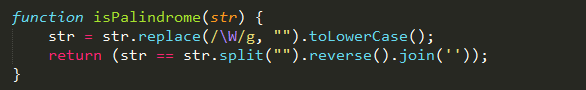

1. JS gets media query.
Use "window.matchMedia" function, and it has two methods: addListener and removeListener.
(1)
(2)
2. What's the shortcoming of "typeof bar === 'Object'"?
It cannot distinguish real object from empty array and null. So we can use "instanceof" or "Object.prototype.toString.call(bar) === '[object Object]'" to help us.
3. What does the following code return?
Because the self executing function is equivalent to {b = 3;var a = b;}, so "b" will be a global variable.
4. What does the following code return?
5. What is IIFE? (Immediately-Invoked Function Expression)
If we put a code block into a function, and let it be the self executing function, that means IIFE.
6. How to solve the question: "0.1 + 0.2 === 0.3" return false
Because the operands are first converted into binary, and then computed, so this question always exists. We can use "x.toFix(2)" and "x.toPrecision()" to help us.
7. Find the output order of digital 1-4.
Why does "3" appear later than "4"? Because the "setTimeout" function will be executed after JS main parts(JS operating mechanism). For more details, you can search
RuanYifeng's blog.
8. Finding palindrome

9. What is the output?
Because the "reverse()" function will return the reference of original array, the "arr1" and "arr2" are the same thing. What's more, "arr2.push(arr3)" is to let the whole arr3 be the last element of arr2.
(That's all)